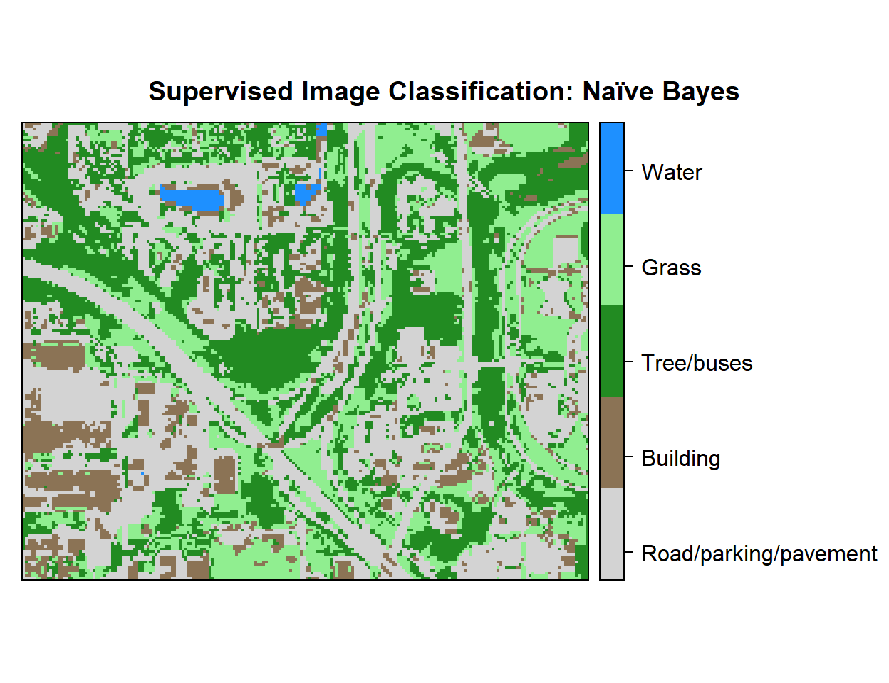

In this lesson we will learn about Naïve Bayes classification models, which use an algorithm that relies on Bayes Theorem, and which is based on strong assumptions concerning the independence of the predictors conditional on the response . Naïve Bayes classification models are commonly used as an alternative to decision trees for classification problems. Naive Bayes classification models are highly scalable, requiring a number of parameters linear in the number of variables (features/predictors) in a learning problem . In training the models, maximum-likelihood methods are used to evaluate a closed-form expression .
library(rgdal) # spatial data processing
library(raster) # raster processing
library(plyr) # data manipulation
library(dplyr) # data manipulation
library(RStoolbox) # Image analysis & plotting spatial data
library(RColorBrewer) # color
library(ggplot2) # plotting
library(sp) # spatial data
library(caret) # machine laerning
library(doParallel) # Parallel processing
library(e1071) # Naive BayesThe data could be available for download from here.
# Define data folder
dataFolder<-"F://Spatial_Data_Processing_and_Analysis_R//Data//DATA_09//"train.df<-read.csv(paste0(dataFolder,".\\Sentinel_2\\train_data.csv"), header = T)
test.df<-read.csv(paste0(dataFolder,".\\Sentinel_2\\test_data.csv"), header = T)mc <- makeCluster(detectCores())
registerDoParallel(mc)myControl <- trainControl(method="repeatedcv",
number=3,
repeats=2,
returnResamp='all',
allowParallel=TRUE)We will use the train() function of the caret package with the “method” parameter “nb” wrapped from the e1071 package.
set.seed(849)
fit.nb <- train(as.factor(Landuse)~B2+B3+B4+B4+B6+B7+B8+B8A+B11+B12,
data=train.df,
method = "nb",
metric= "Accuracy",
preProc = c("center", "scale"),
trControl = myControl
)
fit.nb ## Naive Bayes
##
## 16764 samples
## 9 predictor
## 5 classes: 'Building', 'Grass', 'Parking/road/pavement', 'Tree/bushes', 'Water'
##
## Pre-processing: centered (9), scaled (9)
## Resampling: Cross-Validated (3 fold, repeated 2 times)
## Summary of sample sizes: 11176, 11175, 11177, 11175, 11175, 11178, ...
## Resampling results across tuning parameters:
##
## usekernel Accuracy Kappa
## FALSE 0.8800113 0.8408077
## TRUE 0.9065557 0.8759263
##
## Tuning parameter 'fL' was held constant at a value of 0
## Tuning
## parameter 'adjust' was held constant at a value of 1
## Accuracy was used to select the optimal model using the largest value.
## The final values used for the model were fL = 0, usekernel = TRUE
## and adjust = 1.stopCluster(mc)p1<-predict(fit.nb, train.df, type = "raw")
confusionMatrix(p1, train.df$Landuse)## Confusion Matrix and Statistics
##
## Reference
## Prediction Building Grass Parking/road/pavement Tree/bushes
## Building 2309 0 97 1
## Grass 50 3397 1 55
## Parking/road/pavement 679 0 3743 432
## Tree/bushes 63 85 33 5180
## Water 0 0 0 0
## Reference
## Prediction Water
## Building 0
## Grass 0
## Parking/road/pavement 8
## Tree/bushes 7
## Water 624
##
## Overall Statistics
##
## Accuracy : 0.9099
## 95% CI : (0.9054, 0.9142)
## No Information Rate : 0.3381
## P-Value [Acc > NIR] : < 2.2e-16
##
## Kappa : 0.8804
## Mcnemar's Test P-Value : NA
##
## Statistics by Class:
##
## Class: Building Class: Grass
## Sensitivity 0.7446 0.9756
## Specificity 0.9928 0.9920
## Pos Pred Value 0.9593 0.9697
## Neg Pred Value 0.9448 0.9936
## Prevalence 0.1850 0.2077
## Detection Rate 0.1377 0.2026
## Detection Prevalence 0.1436 0.2090
## Balanced Accuracy 0.8687 0.9838
## Class: Parking/road/pavement Class: Tree/bushes
## Sensitivity 0.9662 0.9139
## Specificity 0.9132 0.9831
## Pos Pred Value 0.7698 0.9650
## Neg Pred Value 0.9890 0.9572
## Prevalence 0.2311 0.3381
## Detection Rate 0.2233 0.3090
## Detection Prevalence 0.2900 0.3202
## Balanced Accuracy 0.9397 0.9485
## Class: Water
## Sensitivity 0.97653
## Specificity 1.00000
## Pos Pred Value 1.00000
## Neg Pred Value 0.99907
## Prevalence 0.03812
## Detection Rate 0.03722
## Detection Prevalence 0.03722
## Balanced Accuracy 0.98826p2<-predict(fit.nb, test.df, type = "raw")
confusionMatrix(p2, test.df$Landuse)## Confusion Matrix and Statistics
##
## Reference
## Prediction Building Grass Parking/road/pavement Tree/bushes
## Building 997 0 42 2
## Grass 17 1452 0 19
## Parking/road/pavement 287 0 1606 202
## Tree/bushes 27 39 12 2206
## Water 0 0 0 0
## Reference
## Prediction Water
## Building 0
## Grass 0
## Parking/road/pavement 4
## Tree/bushes 5
## Water 264
##
## Overall Statistics
##
## Accuracy : 0.9086
## 95% CI : (0.9017, 0.9152)
## No Information Rate : 0.3383
## P-Value [Acc > NIR] : < 2.2e-16
##
## Kappa : 0.8787
## Mcnemar's Test P-Value : NA
##
## Statistics by Class:
##
## Class: Building Class: Grass
## Sensitivity 0.7508 0.9738
## Specificity 0.9925 0.9937
## Pos Pred Value 0.9577 0.9758
## Neg Pred Value 0.9461 0.9931
## Prevalence 0.1849 0.2076
## Detection Rate 0.1388 0.2022
## Detection Prevalence 0.1450 0.2072
## Balanced Accuracy 0.8716 0.9838
## Class: Parking/road/pavement Class: Tree/bushes
## Sensitivity 0.9675 0.9082
## Specificity 0.9107 0.9825
## Pos Pred Value 0.7651 0.9637
## Neg Pred Value 0.9894 0.9544
## Prevalence 0.2312 0.3383
## Detection Rate 0.2236 0.3072
## Detection Prevalence 0.2923 0.3188
## Balanced Accuracy 0.9391 0.9454
## Class: Water
## Sensitivity 0.96703
## Specificity 1.00000
## Pos Pred Value 1.00000
## Neg Pred Value 0.99870
## Prevalence 0.03802
## Detection Rate 0.03676
## Detection Prevalence 0.03676
## Balanced Accuracy 0.98352# read grid CSV file
grid.df<-read.csv(paste0(dataFolder,".\\Sentinel_2\\prediction_grid_data.csv"), header = T)
# Preddict at grid location
p3<-as.data.frame(predict(fit.nb, grid.df, type = "raw"))
# Extract predicted landuse class
grid.df$Landuse<-p3$predict
# Import lnaduse ID file
ID<-read.csv(paste0(dataFolder,".\\Sentinel_2\\Landuse_ID.csv"), header=T)
# Join landuse ID
grid.new<-join(grid.df, ID, by="Landuse", type="inner")
# Omit missing values
grid.new.na<-na.omit(grid.new) x<-SpatialPointsDataFrame(as.data.frame(grid.new.na)[, c("x", "y")], data = grid.new.na)
r <- rasterFromXYZ(as.data.frame(x)[, c("x", "y", "Class_ID")])# Color Palette
myPalette <- colorRampPalette(c("light grey","burlywood4", "forestgreen","light green", "dodgerblue"))
# Plot Map
LU<-spplot(r,"Class_ID", main="Supervised Image Classification: Naïve Bayes" ,
colorkey = list(space="right",tick.number=1,height=1, width=1.5,
labels = list(at = seq(1,4.8,length=5),cex=1.0,
lab = c("Road/parking/pavement" ,"Building", "Tree/buses", "Grass", "Water"))),
col.regions=myPalette,cut=4)
LU
# writeRaster(r, filename = paste0(dataFolder,".\\Sentinel_2\\NB_Landuse.tiff"), "GTiff", overwrite=T)rm(list = ls())